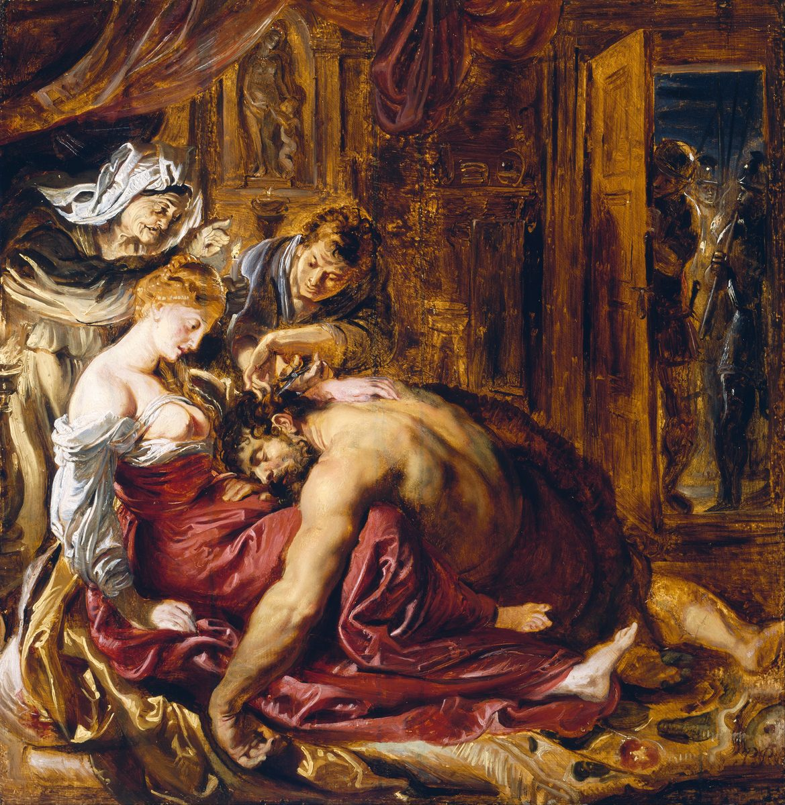

Judges 16 — The Mister Translation

Rubens paints verse 19 with the ambush of verse 9 waiting at the door. The Hebrew makes Delilah the one who shaves: she “called a man, and shaved off the seven locks of his head”, as the ASV keeps it. The KJV has “she caused him to shave off”, and Rubens, like the KJV, puts the blade in the man’s hand — scissors, where Samson had spoken of a razor.

Translator's Notes — verse by verse
A prostitute in Gaza. Ishah zonah, “a woman, a prostitute”, are the words for Rahab, at whose house the spies lodged (Joshua 2:1), and for Jephthah’s mother (Judges 11:1), both now on these pages. Gaza is one of the cities Judah took at the book’s start (Judges 1:18, now on these pages) and Philistine again here.
A verse with no verb. The Hebrew of verse 2 begins la-‘azzatim lemor, “to the Gazites, saying”, with no word for who told them; the translation brackets “[Word came]” rather than fill the gap silently. Both Greek texts have “it was told”, and so do the KJV and the ASV, “And it was told the Gazites”. The ambush “kept quiet all night”: vayitcharshu, from charash in the sense of silence, the same letters as the “plowing” of Judges 14:18 (now on these pages).
The gates. At midnight Samson takes the doors of the city gate, the two posts and the bar, and carries them “to the top of the hill that faces Hebron”: from the coast to the hill country of Judah, uphill all the way. The KJV has “the top of an hill that is before Hebron”, the TLB “the top of the mountain across from Hebron”. Josephus, who has him lodging at one of the inns of Gaza, says he carried them on his shoulders to the mountain above Hebron (Antiquities 5.304–305, numbered 5.8.10 in Whiston).
“He loved a woman.” It is the first time the story says Samson loved anyone; it never says she loved him. Delilah is the only woman in Samson’s story who is given a name — his mother, the bride at Timnah and the woman at Gaza are all nameless — and the chapter does not say what people she belonged to. Josephus calls her “a woman who was a courtesan among the Philistines”, and says Samson “was already transgressing the laws of his fathers” (Antiquities 5.306, numbered 5.8.11 in Whiston).
The valley of Sorek. Sorek is the word for a choice vine, the vine of Jacob’s blessing on Judah, “his donkey’s colt to the choice vine” (Genesis 49:11, now on these pages). The Nazirite who may eat nothing from the grapevine comes back, once more, to the vines.
The lords and the price. The seranim, “lords of the Philistines”, are the five of Judges 3:3 (now on these pages). They give her the word the wedding guests gave the Timnite bride, “Entice your husband” (Judges 14:15, now on these pages), and they want him bound “to afflict him”, le’annoto, the verb of Egypt’s chiefs of forced labour, set over Israel “to afflict them” (Exodus 1:11, now on these pages). Each promises eleven hundred pieces of silver, the sum Micah’s mother will lose at Judges 17:2 (now on these pages). The NWT 1984 calls them “the axis lords”, the TLB “The five heads of the Philistine nation”, and the TLB also turns the silver into “a thousand dollars”.
Bowstrings, or vines. Yetarim lachim are cords still “fresh”, not yet dried; yeter is the string of a bow. The NIV has “seven fresh bowstrings”, the NWT 1984 “seven still-moist sinews”, the KJV “seven green withs”. Josephus has Delilah bind him, while drunk, with seven shoots of a vine (Antiquities 5.308–309, numbered 5.8.11 in Whiston), putting both wine and the vine into a story about a Nazirite.
The inner room. The ambush is “sitting in her inner room”, ba-cheder, the room Samson was refused at his wife’s house (Judges 15:1, now on these pages). She cries, “The Philistines are upon you, Samson!” — four times in the chapter (vv. 9, 12, 14, 20), and the fourth time it is true.
Tow that smells the fire. He snaps the cords “as a strand of tow snaps when it smells the fire”. Ne’oret, “tow”, is the word of “the strong one will become tow” (Isaiah 1:31, now on these pages). The NWT 1984 keeps the smell, “when it smells fire”; the KJV has “when it toucheth the fire”, and the Douay “a thread of tow twined with spittle, when it smelleth the fire”.
“You have mocked me.” Delilah’s hetalta bi stands in three verses of the Hebrew Bible, all hers (vv. 10, 13, 15). The verb is the one Jacob used of Laban, “your father has cheated me” (Genesis 31:7, now on these pages). The KJV and the ASV have “thou hast mocked me”, the NWT 1984 “you have trifled with me”.
New ropes, again. Samson names the binding he already broke at Lehi, “new ropes” (Judges 15:13, now on these pages), and snaps them “like a thread”, ka-chut, the thread Abram would not take from the king of Sodom (Genesis 14:23, now on these pages).
A sentence that stops. In the Hebrew Samson says only, “If you weave the seven locks of my head into the web”, and in the next verse “she drove in the peg”. Both Greek texts carry more: “and fasten it with the peg into the wall, and I will be weak like any man”, and in the next verse both tell how, while he slept, Delilah wove the seven locks into the web and fastened them to the wall with the peg. The NIV takes the extra words into its text, “and tighten it with the pin, I’ll become as weak as any other man”; the KJV and the ASV keep the Hebrew’s short “If thou weavest the seven locks of my head with the web”. This translation prints the Masoretic text and gives the Greek here.
The peg. “She drove in the peg”: vattitka bayated. The verb vattitka, “and she drove in”, stands in two verses of the Hebrew Bible, both with a peg in a woman’s hand and a man asleep: here, and Jael, who “drove the peg into his temple” while Sisera slept (Judges 4:21, now on these pages). Sisera did not wake. Samson does, and pulls out “the peg of the loom, and the web”.
“Your heart is not with me.” The Timnite bride’s charge comes back in Delilah’s mouth: “You only hate me; you do not love me” (Judges 14:16, now on these pages) becomes “How can you say ‘I love you’ when your heart is not with me?” She “pressed him”, hetsiqah, the verb of the bride at 14:17.
“His soul was cut short.” The words vattiqtsar nafsho stand in two verses of the Hebrew Bible: here, where Samson’s soul is cut short “to the point of death”, and Judges 10:16 (now on these pages), where Jehovah’s soul “was cut short over the misery of Israel”. The KJV and the ASV have “his soul was vexed unto death”, the NIV “he was sick to death of it”.
All his heart. The phrase “all his heart”, et kol libbo, stands in two verses of the Hebrew Bible, verses 17 and 18, three times over. What he tells her is the angel’s word to his mother, “no razor shall touch his head … a Nazirite of God from the womb” (Judges 13:5, now on these pages), in his own mouth. He names only the hair; the wine and the dead, the other two rules of Numbers 6 (now on these pages), are not mentioned.
She began to afflict him. Delilah calls the lords “this once”, they come with the silver, and she puts him to sleep on her knees, calls a man, and shaves the seven locks. “And she began to afflict him”: vattachel, the verb of “he will begin to save Israel” and of the spirit that “began to stir him” (Judges 13:5 and 13:25, now on these pages). He was to begin a deliverance; she begins the affliction. The KJV and the ASV have “she began to afflict him”, the NIV “and so began to subdue him”.
“As time after time.” He wakes and says, “I will go out as time after time, and shake myself free”: kefa’am befa’am, the pa’am of the spirit that first stirred him. The phrase is Balaam’s too, who did not go “as time after time before” to look for omens (Numbers 24:1, now on these pages). “But he did not know that Jehovah had turned away from him.” The narrator does not say the strength was in the hair; he says Jehovah left. The ASV has “he knew not that Jehovah was departed from him”.
Eyes, bronze, and a mill. They gouge out his eyes, bring him down to Gaza, bind him in bronze fetters, and he becomes “a grinder”, the work of “the slave girl who is behind the millstones” (Exodus 11:5, now on these pages). Eyes put out and bronze fetters come again for the last king of Judah, Zedekiah (2 Kings 25:7). Then: “the hair of his head began to grow again” — vayyachel, the verb of beginning once more.
The song. The lords gather to sacrifice to Dagon, the god of Beth-dagon in Judah’s town list (Joshua 15:41, now on these pages), whose image will fall before the ark (1 Samuel 5:3–4, now on these pages). Their song rhymes on -enu, “our”: natan eloheinu beyadenu et Shimshon oyevenu, “Our god has given into our hand Samson our enemy”, and the people’s version adds machariv artsenu and chalaleinu, “the ravager of our land” and “our slain”.
“Make sport.” They call for Samson “that he may make sport for us”, visachek-lanu, and “he made sport before them”, vaytsacheq: one verb in its two spellings, with s and with ts, and the roof watches him “make sport” with the s again (v. 27). The ts spelling is the root of Isaac’s name: the letters of vaytsacheq stand in seven verses of the Hebrew Bible, five of them the name, “and Isaac”, and one Abraham, who “laughed” at the promise of a son (Genesis 17:17, now on these pages). The same root gives Ishmael “laughing” (Genesis 21:9) and the people who “rose up to make merry” before the golden calf (Exodus 32:6), both now on these pages. The KJV and the ASV have “make us sport”; the NWT 1984 “offer us some amusement”.
The crowd. A boy leads the blind man by the hand to the pillars “on which the house rests”. The house is full, and on the roof are about three thousand men and women — as many as the men of Judah who came down to bind him at the rock of Etam (Judges 15:11, now on these pages).
The second prayer. “Lord Jehovah, remember me, please”: Adonai YHWH, Gideon’s “Alas, Lord Jehovah!” (Judges 6:22, now on these pages), and zokhreni na, “remember me, please”, the verb of Hannah’s prayer that Jehovah would “remember me” (1 Samuel 1:11, now on these pages). “Only this once” takes back Delilah’s word to the lords, “Come up this once” (v. 18). The B Greek text keeps Adōnaie, the Hebrew word in Greek letters.
One vengeance for two eyes. Ve-innaqmah neqam-achat mishtei einai can be read “one vengeance for my two eyes” or “vengeance for one of my two eyes”, and the shelf takes both. The NWT 1984 has “vengeance for one of my two eyes”, and the TLB “for the loss of at least one of my eyes”; the KJV and the ASV have “that I may be at once avenged of the Philistines for my two eyes”. Both Greek texts read one act of vengeance for the two eyes, and so does this translation.
“Let me die with the Philistines.” Tamot nafshi, “let me die”, is Balaam’s wish, “Let me die the death of the upright” (Numbers 23:10, now on these pages); Samson asks to die with the uncircumcised. The narrator’s sum is cool: “the dead whom he killed at his death were more than those he had killed in his life.” Josephus closes with praise of his virtue and strength, and says that being caught by a woman must be put down to human nature (Antiquities 5.316–317, numbered 5.8.12 in Whiston).
Buried with his father. His brothers and his father’s house bring him up and bury him “between Zorah and Eshtaol”, where the spirit first stirred him (Judges 13:25, now on these pages), “in the tomb of Manoah his father”. The judge’s formula of Judges 15:20 (now on these pages) is said again, “He had judged Israel twenty years”, and the book gives no judge after him. The letter to the Hebrews names him among those of faith, with Gideon, Barak and Jephthah (Hebrews 11:32, now on these pages).
Patterns worth carrying forward
Where this translation keeps the words exact and distinct: “[Word came]”, bracketed where the Hebrew has no verb; “Entice” for patti, as at Judges 14:15; “to afflict” for innah, as in Exodus; “the inner room” for cheder; “mocked” for hetel; “new ropes” for avotim chadashim, as at Lehi; “drove in the peg” for vattitka bayated, as with Jael; “his soul was cut short” for vattiqtsar nafsho, as at Judges 10:16; “began” for chalal in verses 19 and 22; “time after time” for kefa’am befa’am; “make sport” for tsachaq; “Lord Jehovah” for Adonai YHWH; and “one vengeance for my two eyes”.
Echoes paid. The Nazirite of Judges 13:5 tells his secret; the beginnings of 13:5 and 13:25 end in Delilah’s; Samson is buried between Zorah and Eshtaol, where the spirit first stirred him. The bride’s “you do not love me” and “she pressed him” at Judges 14:16–17 return with Delilah, and “Entice” from 14:15. The new ropes and the three thousand of Judges 15:11–13 return, and the twenty years of 15:20 are said again. Jael’s peg at Judges 4:21 is driven a second time, and the soul “cut short” at Judges 10:16 is now Samson’s.
Echoes planted. The eleven hundred pieces of silver come back with Micah’s mother at Judges 17:2, now on these pages. Dagon falls before the ark at 1 Samuel 5:3–4, now on these pages. Eyes put out and bronze fetters come back for Zedekiah at 2 Kings 25:7.
Next installment in this book: Judges 17 — no more judges: Micah of the hill country of Ephraim returns eleven hundred pieces of silver to his mother, she has an image made, and a wandering Levite from Bethlehem becomes his priest for ten pieces of silver a year; “In those days there was no king in Israel; each man did what was right in his own eyes.”